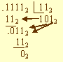

Начало
Правила деления дробных чисел
Рассмотрим правила деления только для двоичных чисел
Деление шестнадцатеричных чисел проще выполнять, переведя их предварительно в десятичную систему счисления.
Пример: разделим двоичное число 11112 на двоичное число 112.
Решение задачи представим схемой:

Для проверки правильности результата воспользуемся данными из примера умножения.
Они показывают, что деление выполнено верно: 11112 / 112 = 1012.
<--Назад
Вперёд-->